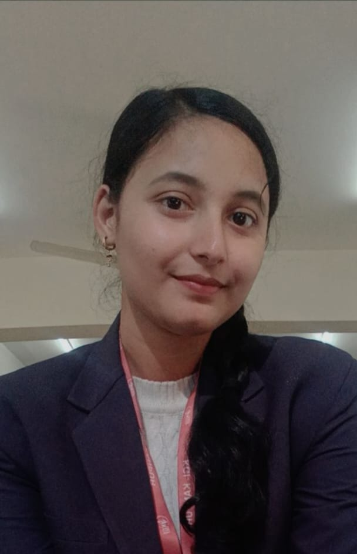

Typing speed test
A browser game that tracks your words per minute and accuracy as you type. It has easy, medium and hard modes, a timer, and a results screen. Plain HTML, CSS and JavaScript with no libraries.
Try it liveOpen to roles after graduating in 2027
$I write programs in C and Java.
Third-year CSE student at KIOT Kanpur. I build small, finished projects and learn something new from each one. I'm looking for a role where I can do real work and keep growing.

I'm a third-year CSE student from Gorakhpur. I started coding in C in my first year and it stuck. Since then I've done Java training, built a handful of small projects, and made web pages, including this one.
I've also anchored college events, including the IBM SkillsBuild workshop. Outside class, I'm learning Python and getting better at web development with Java.
I want a job where I get real work and keep learning. I'm open to any location.
A browser game that tracks your words per minute and accuracy as you type. It has easy, medium and hard modes, a timer, and a results screen. Plain HTML, CSS and JavaScript with no libraries.
Try it liveA C program where the computer picks a random number and you try to find it. It gives too-high and too-low hints, keeps score, and limits your attempts.
View on GitHubA C tool that converts length, weight and temperature from a simple menu. It handles invalid input and runs straight from the terminal.
View on GitHubA small page that collects my GitHub and contact links, hosted on GitHub Pages. It was the first webpage I deployed properly.
Krishna Institute of Technology, Kanpur
8.1 SGPAModern Java features, clean code practices and modular design. I want to use this to build web apps.
Inheritance, polymorphism and encapsulation, practised by writing class-based programs.
P.N. National School, Fazilnagar (Kushinagar)
70%P.N. National School, Gorakhpur
75%I'm looking for a first role where I can do real work and keep learning, in any location. If you're hiring, I'd like to hear from you.
tanishasingh3082005@gmail.com